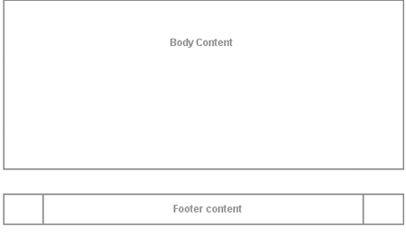
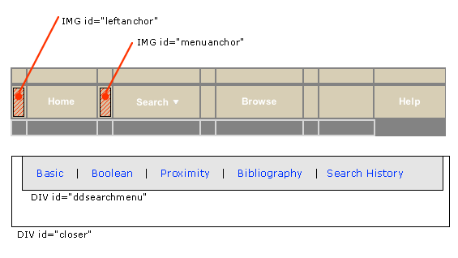

navheader.chnk
[anytemplate].tpl
Many of the pieces of the DLXS Text Class UI introduced in release 8 remain in releases 9 and 10, including continued use of cascading CSS stylesheets, and fallback mechanisms that allow piecemeal substitution of template or template components for individual collections, while still utilizing class defaults. In general the underlying page layout has also remained the same. For a review of HTML templates and procedures for customizing template design, see the release 10 UI overview from the February 2003 workshop.
The most significant changes, both in functionality and system architecture, over the last 3 releases include ...
Changes to DLXS text Class templates were relatively minor between releases 8 and 9: the most significant change coming in the introduction of PIs for new restriction fields in collection-specific search forms. Changes to the user interface for release 10, however, were more significant. The introduction of imported "chunk " templates made it possible to extract repeatable elements from one or more templates into separate components that could be more easily managed. The navheader.chnk is perhaps the most significant of these. It contains the header and navigation bar portion of each template, and is thus imported by all templates that require a navigation bar. See a synopsis of template and PI migrations from release 8 to 10 to view the progression of template/web files and the most important PIs. Figure 1 illustrates the general layout of a typical template page in release 10.
navheader.chnk |
|  [anytemplate].tpl |
| Figure 1 : Release 10 template layout showing division between main template content and the imported navheader "chunk" file.. |
Managing page navigation in release 10 is different from previous releases, then, in two significant ways: First, is that navigation HTML need only be maintained in one place, since it is now contained in an imported file. Because navigation bar HTML is in one place, "state" information is now no longer stored individually (e.g., the browse tab "up" state; the search tab "up" state) in the HTML of each template, but is "anchored" to the navigation bar HTML via ID attributes linked to CSS, and "turned on" conditionally in various templates. More specifics of how the "state" information is created is given in the UI document from the Winter 2003 workshop.
The second way release 10 navigation maintenance is different from previous releases is that release 10 utilizes, by default, a DHTML pull-down menu for search options. The elements of the dynamic menu are illlustrated in Figure 2 below.
|  |
| Figure 2 :"close-up" of the navigation bar, showing main DHTML menu components. |
HTML from navheader.chnk file is shown below; included here are
the two layers that constitute the hidden pull-down search menu, and the portion
of the navigation bar that triggers the menu (in highlighted colors). Since
the only portion of the menu that comes from the CGI are the search type link
hrefs, changing the look or shape of the menu is simply a matter of editing
the menu HTML. (Well, almost: the "closer" layer, which lays under
the drop down menu layer, should always be top-alligned with the menu layer,
but sufficiently wide and deep enough to provide a margin outside the left,
bottom, and right edges of the menu layer.) The javascript invoked by the search
link (in green below) opens the pull menu "snapped" to the image with
ID="menuanchor" (shown in red). This means that so long as menuanchor
is present in relation to the search tab, the pull-down menu will always appear
in relation to the navigation bar. The javascript functions that execute the
menu behavior are contained in the jsheader.chnk template, and
are imported into the page at load time.
<td id="sep1" width="1">
< img src="/t/text/graphics/plug.gif" width="1" height="23" border="0" vspace="0" hspace="0" name="menuanchor" id="menuanchor" alt="design graphic " > </td>
<!-- search -->
<!-- this nav bar tab is conditionally included by the cgi -->
<?INCLUDE_SEARCH_TAB>
<td id="searchtab" width="90" height="23" align="center" nowrap>
<span class="navlinks">
< a id="searchlink" href="<?SIMPLE_SEARCH_LINK>" class="nav" onMouseOver="P7_Snap('menuanchor','closer',-70,25,'menuanchor','ddsearchmenu',-50,25);P7_autoLayers(0,'ddsearchmenu','closer')"> Search<img name="navmenuarrow" src="/t/text/graphics/navdwnarrow.gif" alt="design graphic" width="16" height="8" border="0"></a></span>
</td>
<td id="sep2" width="1"><img src="/t/text/graphics/plug.gif" width="1" height="1" border="0" alt="design graphic"> </td>
<div style="position:absolute; left:15px; top:70px; width:420px; height:22px; z-index:3; visibility: hidden;" id="ddsearchmenu"> <table width="420" border="0" cellspacing="0" cellpadding="0"> <tr> <td bgcolor="#666666">
<table width="100%" border="0" cellspacing="1" cellpadding="0">
<tr>
<td class="mencellup" height="22" bgcolor="#E5E5E5" nowrap>
<span class="smallformfont"><a class="menunav" href="<?SIMPLE_SEARCH_LINK>">Basic</a></span>
|
<span class="smallformfont"><a class="menunav" href="<?BOOLEAN_SEARCH_LINK>">Boolean</a></span>
|
<span class="smallformfont"><a class="menunav" href="<?PROXIMITY_SEARCH_LINK>">Proximity</a></span>
|
<span class="smallformfont"><a class="menunav" href="<?SEARCH_HISTORY_LINK>">Search History</a></span>
</td>
</tr>
</table></td> </tr> </table> </div>
<div id="closer" style="position:absolute; left:3px; top:70px; width:460px; height:50px; z-index:2; visibility: hidden;"><a href="javascript:;" onMouseOver="P7_autoLayers(0)"><img src="/t/text/graphics/plug.gif" name="Image1" width="460" height="50" hspace="0" vspace="0" border="0" id="Image1" alt="design graphic"></a></div>
<!-- end menu divs -->
In summary, the relevant files for managing navigation look and feel for a collection include the following files, any of which can be customized for individual collections.
navheader.chnk- Contains html and PIs for the page header, the navigation bar, and the pull-down menu layers.
jsheader.chnk- Contains the javascript files necessary to execute the pull-down search menu.
browsetabstyle.css- Contains the appropriate CSS style rules that determine the appearance of the browse tab in it's "up" state. This stylesheet is invoked through the <?NAV_TAB_STYLE_OVERRIDES> PI that appears in a browse template.
searchtabstyles.css- Analogous to
browsetabstyle.css. Contains the appropriate CSS style rules that determine the appearance of the search tab in it's " up " state. This stylesheet is invoked through the <?NAV_TAB_STYLE_OVERRIDES> PI that appears in thesearch.tpltemplate.
textclass.css / textclass-specific.css- Contain class default or collection specific CSS style rules that determine the appearance of the navigation bar colors and fonts.
Search templates are the most changed in release 10. As shown in the
synopsis
of template and PI migrations document, the multiple search templates for
each search scenario have been replaced by a single parent search template,
search.tpl
, and several importable "chunk"
files. Excerpts from search.tpl
and one such imported chunk, simplesearchform.chnk, are shown below. Each imported
chunk contains a complete table containing only the individual form elements
(or their PI aliases) that are required.
-- search.tpl --
<form method="GET" action="<?SCRIPT_NAME cginame="text-idx">" name="search" <?FORM_VALIDATE>>
<table border="0" cellspacing="0" cellpadding="4">
<tr>
<input type="hidden" name="type" value="<?SEARCH_TYPE>" />
<?HIDDEN_REQUESTED_COLLECTIONS>
<?HIDDEN_SID>
<?HIDDEN_XC>
<?HIDDEN_IDNO>
<?HIDDEN_BOOKBAG>
<?HIDDEN_G>
<?HIDDEN_XG>
<?HIDDEN_DEBUG>
<td width="10" align="left" valign="top" bgcolor="ffffff"><img src="/t/text/graphics/plug.gif" width="10" height="5" border="0"></td>
<td colspan="2" align="left" valign="top" bgcolor="ffffff">
<!-- SEARCH FORM -->
< ?CHUNK type="page " >
<!-- END SEARCH FORM -->
</td>
</tr>
-- simplesearchform.chnk --
<table border="0" cellspacing="0" cellpadding="7">
<tr bgcolor="#e5e5e5">
<td align="right" nowrap><span class="formfont">Search in:</span>
</td>
<td colspan="2" align="left">
<?REGION_SEARCH_SELECT class="selectmenu">
</td>
</tr>
<tr bgcolor="#e5e5e5">
<td align="right">
<span class="formfont">Find:</span></td>
<td align="left" nowrap>
<?Q1_INPUT size="30" class="formhilite">
...
</table>
The path from release 8/9 to 10 involves these file substitutions ...
| bib.tpl | search.tpl - > bibsearchform.chnk |
| bibext.tpl | N/A |
| boolean.tpl | search.tpl - > booleansearchform.chnk |
| booleanbbag.tpl | bbagsearch.tpl - > bbagbooleansearchform.chnk |
| booleanext.tpl | N/A |
| proximity.tpl | search.tpl - > proximitysearchform.chnk |
| proximitybbag.tpl | bbagsearch.tpl - > bbagproximitysearchform.chnk |
| proximityext.tpl | N/A |
| searchhistory.tpl | searchhistory.tpl |
| simple.tpl | search.tpl - > simplesearchform.chnk |
| simplebbag.tpl | bbagsearch.tpl - > bbagsimplesearchform.chnk |
| simpleext.tpl | N/A |
| ww-full.tpl | ww-full.tpl - > ww-fullnewsearchform.chnk + ww-fullscrollform.chnk |
| ww-start.tpl | ww-full.tpl - > ww-fullnewsearchform.chnk |